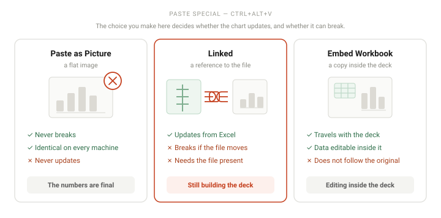

To embed an Excel chart in PowerPoint: copy the chart in Excel, then in PowerPoint use Home → Paste → Paste Special (Ctrl+Alt+V (⌘+Control+V on Mac)) instead of a plain paste. Choose Keep Source Formatting & Link Data for a chart that updates from the spreadsheet, or Use Destination Theme & Embed Workbook to store a copy of the data inside the deck. Choose Picture if it never needs to change.
The question behind this search is almost always "how do I make the chart update when the numbers change" — and the answer depends entirely on which of three things you actually need. Get this choice right and the chart behaves; get it wrong and you will meet the "linked file is unavailable" error in front of an audience.
Pick your method before you start
This decision drives everything else, so make it first.
- Paste as a Picture — the numbers are final A static image. It never updates, but it also never breaks, never needs the Excel file, and looks identical on every machine. For a deck you are about to present, this is the safe answer more often than people expect.
- Link the chart — the numbers will change PowerPoint stores a path to the Excel file and re-reads it on update. The chart stays in sync — but only while the Excel file sits where it was, and only on a machine that can reach it.
- Embed the chart — you want the data inside the deck A copy of the workbook is stored inside the .pptx. The chart travels with the file and can be edited via Edit Data, but it will not pick up changes made to the original spreadsheet.
- Build it in PowerPoint — you never had an Excel file Insert → Chart creates a chart with its own mini spreadsheet inside PowerPoint. Perfectly capable for simple charts, and it avoids the whole issue.
The combination that works for most people: link while the data is still moving, then break the link the day before you present. You get live updates during preparation and a static, unbreakable chart on stage.

Step by step
-
Build the chart in Excel, not in PowerPoint
Excel's charting tools are better than PowerPoint's, and working in the spreadsheet keeps the chart connected to its data. Build and format it there, then move it across.
-
Copy the whole chart
Click the border of the chart in Excel so the whole chart is selected, not a single bar or the legend, then press Ctrl+C (⌘C on Mac). Clicking inside the plot area selects a chart element instead — a common reason people paste something odd.
-
Use Paste Special, not a plain paste
On the slide, go to Home → Paste → Paste Special, or press Ctrl+Alt+V (⌘+Control+V on Mac).
A plain Ctrl+V (⌘V on Mac) makes this choice for you and it is not the choice you want. Always go through Paste Special when the chart needs to do anything other than sit there.
-
Choose the right paste option
The dialog lists several entries. The three that matter:
Microsoft Excel Chart Object — embeds a copy of the workbook. The data lives inside the .pptx and is editable via Edit Data. Does not follow the original file.
Microsoft Excel Chart Object with Paste link selected — creates a live link to the source workbook.
Picture (Enhanced Metafile) or Picture (PNG) — a static image.When you paste with a link or as an embedded object, PowerPoint also offers the theme choice: Keep Source Formatting preserves Excel's colors, Use Destination Theme restyles the chart to match your PowerPoint theme. If your deck has a color scheme, the destination theme option keeps things consistent.
-
Control whether links update on their own
Go to File → Info → Edit Links to Files. This dialog lists every linked object in the presentation and has an Automatic Update checkbox.
Leaving it on means the chart re-reads the spreadsheet whenever you open the deck. That is convenient while you are building and a liability the day you present, because a missing file turns your chart into an error message.
-
Update a linked chart manually
Right-click the chart and choose Update Link, or use File → Info → Edit Links to Files → Update Now. If automatic updating is off, this is how you pull in the latest numbers.
-
Edit embedded data
For an embedded chart, right-click and choose Edit Data. A small spreadsheet opens inside PowerPoint showing the data stored in the deck. Edit it there and the chart updates. This is a copy — changing it does not touch your original Excel file, and vice versa.
-
Break the link before you send or present the deck
This is the step that prevents the most embarrassing failure. In File → Info → Edit Links to Files, select the link and click Break Link.
The chart becomes a static object: it will never update again, and it will never show a broken-link error, on any machine, forever. Do this once the numbers are final — the day before you present, not the morning of.
When it does not work
- "The linked file is unavailable" or a red X on the chart The source Excel workbook has moved, been renamed, or been deleted, so PowerPoint cannot resolve the stored path. Either put the file back where it was, or open File → Info → Edit Links to Files and repoint the link to the new location. If you no longer need live updates, Break Link and the error disappears permanently.
-
The chart does not update on a colleague's or a venue's computer
Linked charts need the source Excel file, and that file is not travelling with your
.pptx — only a path to it is. Embarrassingly, the path is often local, like
C:\Users\you\..., which nobody else can reach. Break the link or use an embedded chart before sharing. - The formatting changes when I paste You almost certainly pasted without choosing, so PowerPoint applied the destination theme. Undo and re-paste through Paste Special, choosing Keep Source Formatting to preserve Excel's appearance, or paste as a picture if you want it pixel-identical.
- The PowerPoint file has become huge Embedded Excel objects each carry a copy of the workbook. Several of them, on top of embedded images or video, add up quickly. Use File → Info → Compress Media for video, and consider linking rather than embedding charts — or pasting as pictures, which are usually smaller than a whole embedded workbook.
- The chart updates but the formatting resets every time Updating a link re-reads the source chart, including its formatting, which discards formatting you applied in PowerPoint. Format the chart the way you want it in Excel, update the link, and it will come across correctly. Alternatively, break the link once the numbers are final and format it freely in PowerPoint afterwards.
- Edit Data opens but shows the wrong numbers You are editing the copy stored inside the deck, which may be out of date relative to the original spreadsheet. This is expected for embedded objects — if you need the latest, the chart should have been linked instead.
Frequently asked questions
- What is the difference between linking and embedding an Excel chart?
- Linking stores a reference to the Excel file — the chart updates when the file changes, but breaks if the file moves or is missing. Embedding stores a copy of the data inside the PowerPoint file — it always travels with the deck, but does not follow changes to the original spreadsheet.
- Why does my chart say the linked file is unavailable?
- The source workbook was moved, renamed or deleted, so the stored path no longer resolves. Restore the file, repoint the link under File → Info → Edit Links to Files, or break the link if you no longer need updates.
- Will my Excel chart update automatically in PowerPoint?
- Only if it was pasted as a linked object and automatic updating is on. Check File → Info → Edit Links to Files. Automatic updates still require the source file to be present and reachable. Embedded charts and pictures never update on their own.
- Does embedding an Excel chart increase the PowerPoint file size?
- Yes — embedding stores a copy of the workbook inside the presentation. Linking keeps the file small because only a reference is saved. Pasting as a picture sits in between, depending on resolution.
- Can I embed an Excel chart in the PowerPoint web app?
- Only in a limited way. The web app can display an embedded chart created in the desktop app, but Paste Special and the Edit Links to Files dialog are desktop features. Do this work in the desktop applications.
Official references
- Insert and update Excel data in PowerPoint Linking versus embedding, and how to update the data afterwards.
- Update or remove a broken link to an external file The Links dialog behind File → Info → Edit Links to Files, including Update Now, Change Source and Break Link.